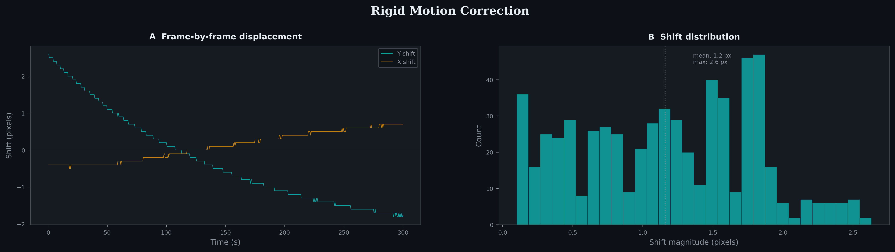
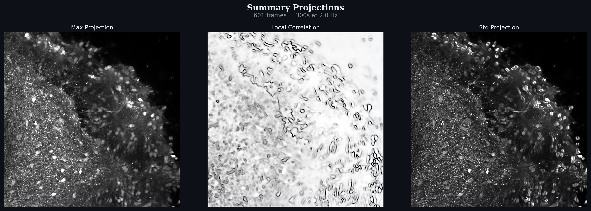
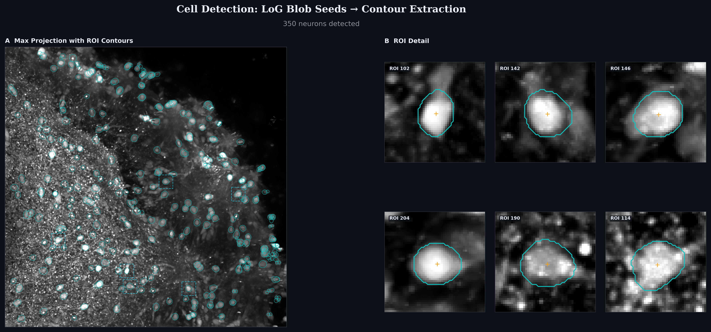
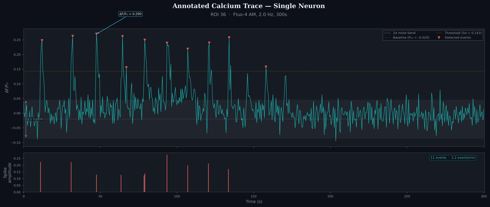
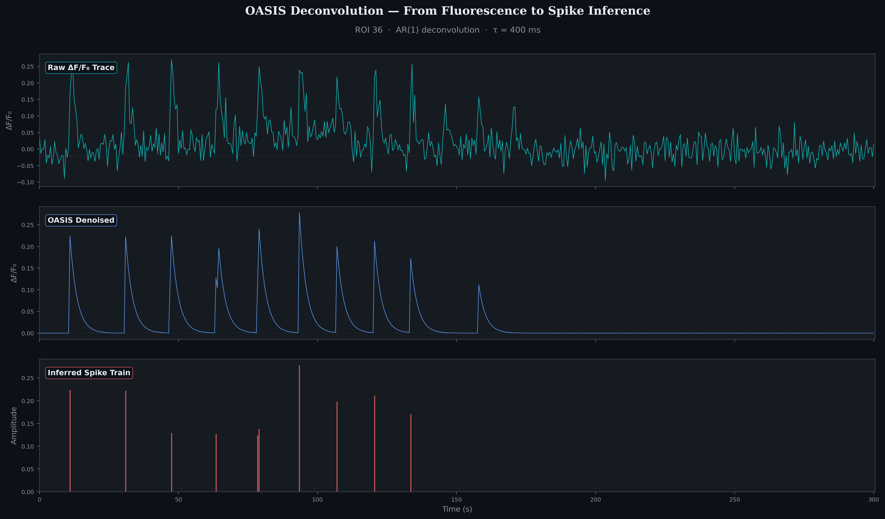

A computational pipeline that processes raw widefield fluorescence recordings of brain organoids into quantified neural activity. Each stage below shows real data from a Fluo-4 AM recording of iPSC-derived organoids. The pipeline is currently functional and under active development.
Stage 01
Sample drift during recording is corrected via rigid registration — each frame is aligned to a reference template using phase-correlation, producing sub-pixel displacement estimates. This is applied before trace extraction to prevent spatial contamination between neighbouring ROIs.

Left: Frame-by-frame Y and X displacement over time. Right: Distribution of total shift magnitudes across all frames.
Stage 02
A 5-minute recording at 2 Hz produces 600 frames of noisy fluorescence data. Before detecting individual cells, we compress the temporal dimension into spatial summary images that highlight different aspects of the data — maximum brightness, temporal variability, and local correlations between neighbouring pixels.

Max projection reveals the brightest each pixel ever gets — highlighting active cells. Local correlation shows where neighbouring pixels co-fluctuate, distinguishing cells from noise. Std projection maps temporal variability — active cells flicker more than background.
Stage 03
Cells are detected in two steps: multi-scale Laplacian-of-Gaussian (LoG) blob detection identifies candidate cell locations and radii, then per-seed Otsu thresholding with a Gaussian locality mask extracts precise contour boundaries.

Left: All detected ROI contours overlaid on the max projection. Right: Zoomed detail panels showing individual cell contours with centroid markers.
LoG blob detection operates across multiple spatial scales to find cell-body-sized features regardless of exact cell radius. Contour extraction uses the std projection within a Gaussian-weighted locality mask around each seed, applying Otsu's threshold to separate cell from background. Overlapping contours are resolved via signed-distance partitioning.
Stage 04
For each detected cell, the mean fluorescence intensity within its contour is extracted across all frames, producing a raw fluorescence time series. This is converted to ΔF/F₀ by estimating and dividing out a rolling baseline, yielding a trace where transient peaks correspond to calcium influx events — a proxy for neural activity.

A single neuron's ΔF/F₀ trace with baseline (dashed), 2σ noise band (grey), 5σ detection threshold (amber), and detected transient events (red markers). The lower panel shows the corresponding spike raster with event amplitudes.
Baseline estimated as the 20th percentile of the trace. Noise estimated via
the MAD of temporal differences:
σ = 1.4826 · MAD(Δtrace) / √2.
Events are detected where ΔF/F₀ exceeds 5σ above baseline, with a refractory
period of 2× the indicator decay time to prevent double-counting.
Stage 05
The slow calcium indicator dynamics (Fluo-4 τ ≈ 400 ms) blur the timing of underlying neural events. OASIS deconvolution recovers a sparse spike train by fitting a constrained AR(1) model — the denoised trace captures the calcium dynamics while the inferred spikes recover discrete event times and amplitudes.

Top: Raw ΔF/F₀ trace. Middle: OASIS denoised calcium signal. Bottom: Inferred spike train — sparse discrete events recovered from the continuous fluorescence.
OASIS (Friedrich et al. 2017) solves a constrained non-negative deconvolution
problem with an AR(1) decay kernel matched to the calcium indicator kinetics.
Minimum spike size s_min = 0.1 and a noise gate at 3.5σ suppress
spurious detections from baseline fluctuations.